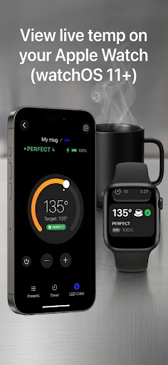
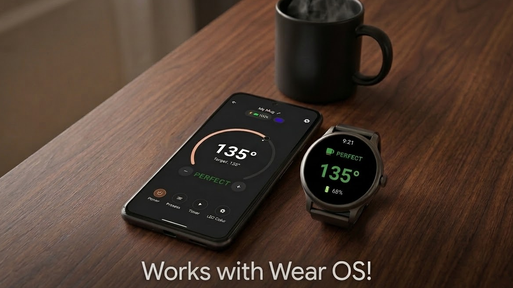
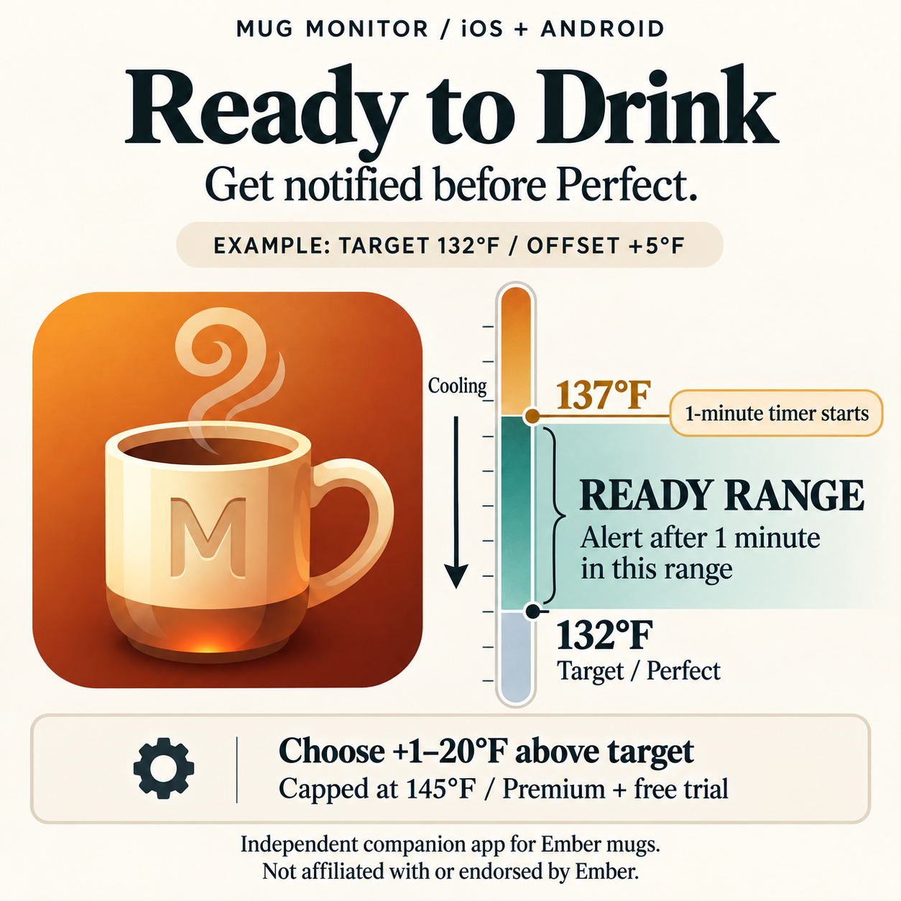

Temperature and battery
See the current drink temperature, target, battery level, and mug state without digging through menus.
Independent companion app for compatible Ember mugs
Mug Monitor is an independent, third-party app for compatible Ember mugs on iPhone and Android. Check temperature and battery, get ready-to-drink alerts, and see your mug’s status on supported watches.
Built by Cybaz Solutions. Not affiliated with or endorsed by Ember.

Free core controls · 7-day Premium trial · No Mug Monitor account needed
Android Premium: one-time purchase.
iOS Premium: in-app upgrade. See pricing and features.

Made for everyday use
Start with free temperature and battery checks, target-temperature controls, presets, and tea timers. Premium adds background visibility, smartwatch support, Ready to Drink alerts, and LED pulsing. Android’s system wake-up reconnect also requires Premium or trial and a supported phone.
See the current drink temperature, target, battery level, and mug state without digging through menus.
Get the normal Perfect alert or choose an earlier Ready to Drink range when you prefer the first sip a little hotter.
Background monitoring helps keep status current. Supported Android phones can also wake Mug Monitor when the mug appears nearby.
iPhone + Apple Watch
Premium or 7-day trial
Mug Monitor uses an iPhone Live Activity to show your mug on the Lock Screen, Dynamic Island on supported iPhones, and the Apple Watch Smart Stack on watchOS 11 or later.
Android + Wear OS
Premium or 7-day trial
Install the Mug Monitor companion app on a compatible Wear OS watch, then keep the Android phone connected to the mug. The watch receives its status through the phone.


Ready to Drink
Set an earlier alert from 1–20°F above your target. Mug Monitor waits until the drink remains in that cooling range for one minute, helping avoid a premature alert while you are still filling the mug.
Available with Premium or during the free trial on iOS and Android. The upper range is capped at 145°F.
Before you download
A watch is optional. Start by connecting your mug to the free phone app and checking that its temperature and battery update.
Mug Monitor works with compatible Bluetooth-enabled Ember mugs. Model and firmware differences can affect setup and available controls.
For an Ember Mug, Mug 2, Cup, Travel Mug, or Tumbler, ask about your exact model if you are unsure. Try the free controls with your mug before purchasing Premium.
The phone connects to the mug over Bluetooth. Watch displays receive information through the phone; they do not connect directly to the mug.
You may still need Ember’s app for firmware updates or initial authorization on some mugs. How the two apps fit together.
| Device | Requirements | What to expect |
|---|---|---|
| iPhone | iOS 16.2 or later | Free core controls. Premium adds Live Activities; Dynamic Island requires a supported iPhone. |
| Android phone | Android 10 or later | Free core controls. Premium adds background status and supported background reconnect features. |
| Apple Watch | watchOS 11+ and a compatible paired iPhone | Live Activity in the Smart Stack. Premium or trial required; no separate watch app. |
| Wear OS watch | Wear OS 3+ and an Android phone; Google Play must offer the watch app for your device | Install the watch companion app. Premium or trial required. |
Android system wake-up reconnect requires Android 12+, the phone manufacturer’s Companion Device support, and setup in Mug Monitor. Store availability and OS behavior can vary. Read the watch setup guide.
Start with the free app
Free core controls remain available after the 7-day Premium trial. Updating the app does not restart an expired trial.
| Feature | Free | Premium or trial |
|---|---|---|
| Temperature, battery, and target controls while the app is open | Included | Included |
| Temperature presets and tea timers | Included | Included |
| Background status: iPhone Live Activities / Android notification | — | Included |
| Apple Watch display / Wear OS companion | — | Included on supported devices |
| Ready to Drink alerts and ready-color LED pulsing | — | Included |
| Android system wake-up reconnect | — | Requires supported phone and setup |
No recurring Android subscription. Open the Premium screen in Mug Monitor for the current Google Play price in your region.
The US App Store lists Mug Monitor Premium Upgrade at $3.99 as of September 20, 2026. Check the purchase screen for your current local price and billing terms.
Reconnecting and background monitoring are different. The free app can connect and retry a connection during normal use. Persistent background status and Android’s system wake-up feature are Premium features. Phone settings, range, and mug firmware affect recovery; no app can guarantee an uninterrupted Bluetooth connection.
Practical Ember help
These guides cover common connection and watch questions from Mug Monitor users.
See what Mug Monitor offers, check compatibility, and learn how to try it with your existing mug.
Work through range, competing connections, Bluetooth, pairing, background restrictions, and the point when a reset actually makes sense.
Set up Apple Watch through Live Activities or install the dedicated Mug Monitor app on a Wear OS watch.
A few useful answers
No. Mug Monitor is developed by Cybaz Solutions. It is an independent third-party app and is not affiliated with, endorsed by, or sponsored by Ember Technologies.
Yes. Keep it available for firmware updates or initial authorization if your mug needs it. Close the app you are not using if the two compete for the connection. See the switching steps.
No. Install the free app and check temperature, battery, and core controls first. Premium features are available during the 7-day trial; the core app remains free afterward.
Mug Monitor cannot repair the battery, coaster, or mug hardware. For charging, repairs, or warranty help, use Ember’s official support.
Know another Ember owner?
Share the Mug Monitor getting-started guide. It explains the features, requirements, and how to try the app with an existing mug.
Writing about Ember mugs? Contact Cybaz Solutions for app details and review questions.

A hobby that grew
Mug Monitor is a hobby project built around everyday use. It started with a simple goal: help an Ember mug reconnect reliably and show its status without opening an app every few minutes.